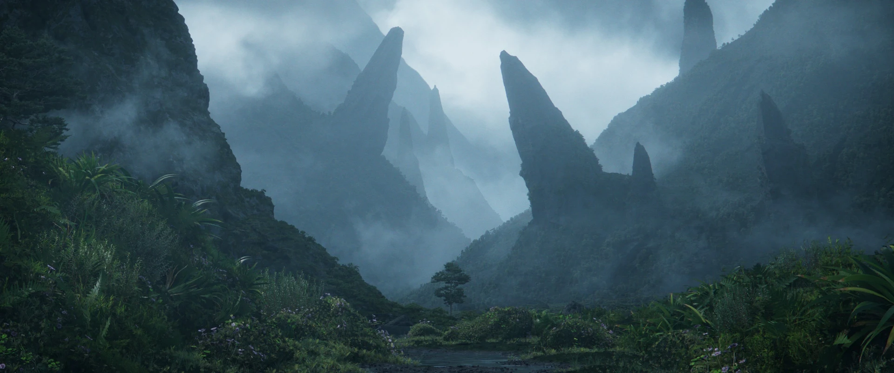
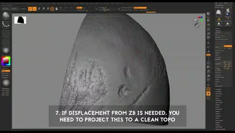
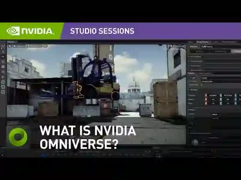
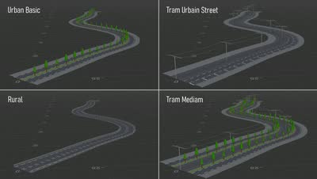

記事・リンクを検索
⌘K

artwork by kurama kageyaHoudiniを使った背景（環境）制作のチュートリアル・Tipsを一箇所に。スキャッター・地形生成・植生など工程別に整理。
GUIDEソフトを問わず、背景・環境制作に関するチュートリアルやリファレンスをまとめる。Houdini以外の事例も含む。
GUIDEHDA・自動化スクリプト・スキャッター/地形生成ツールなど、Houdini完結型のツール群を横断的に整理。
GUIDEComposition・LOPs・Solarisなど、英語ソース中心の資料を日本語解説つきで整理。
GUIDE普段情報収集に使っている海外サイト・プラットフォームの一覧。自分の情報源そのものを公開。
GUIDEソフト・ジャンルを問わず、ちょっとした便利な発見やTipsをまとめる。
GUIDE標高データ・衛星写真など、実地形をベースにした環境制作で使えるデータソースをまとめる。
Tutorial / Pipeline/Plugin/Tool / Article / Showreel/Demoreel / Website / Tips / 毎日作品分析 / Art of Compositionの8カテゴリで整理しています。
直近で追加・更新したキュレーション記事です。

Marcel Haladej氏による、スロバキアのポヴァジュスカー・ビストリツァ駅を描いたCG作品のメイキング。9歳の頃からの構想と2005年の初挑戦を振り返りつつ、リファレンス写真や図面をもとにした最新版の制作を、モードボードからテクスチャリング、完成後の実地訪問まで解説している。

Model/Texture artistのJavier Blanco氏が、自身のDeath Guard（Warhammer 40,000）プロジェクトの鎧に入れた細かいひび割れの作り方をZBrushの短い動画で解説。マスクとClayPolishの反復、ポリゴン数の目安、クリーンなトポロジーへのディテール投影までの手順を紹介している。

Sierra DivisionのCreative Director、Jacob Norris氏によるNVIDIA Omniverse入門動画シリーズ（全6本）。Omniverseとは何か、USDファイル形式の基礎、Omniverse Createでのプロジェクトの立ち上げからライティング・レンダリング、プロジェクト管理、レイヤー/デルタの扱いまでを順番に解説している。

3D StudentのHugo Boussard氏が、Houdiniのプロシージャルモデリング練習として、ダブリンのトリニティ・カレッジ図書館「The Long Room」をフルプロシージャルで再現した作品をArtStationで公開。全体の縦横比から棚の増減まで調整可能なシステムをHoudiniで組み、UVとマテリアル属性付きのFBXとしてUnreal Engineに書き出している。

Hugo Boussard氏が、入力カーブから道路断面をプロシージャルに生成するスタンドアロンのHoudini HDA「Grammar Road」を無料公開。歩道・車線・自転車レーン・バリア・中央分離帯・駐車帯・トラム軌道などを、読みやすいテキスト文法で組み合わせて道路プロファイルを定義でき、JSONの「文法ウォレット」でパターンを整理できる。GitLabでソース込みで公開されている。

HDRI Intelligence（Joseph Bell氏）が、VFX・アニメーション業界の年次レポート『Visual Effects & Animation World Atlas 2026』をPDFで無料公開。世界80か国以上・2,900以上のスタジオに所属する14万人以上の業界従事者のデータをもとに、AI時代の業界動向や主要拠点、スキルセットの分布などをまとめている。

Marcel Haladej氏による、アメリカの砂漠を走るBNSFの貨物列車を描いたCG作品のメイキング。旅先での着想からリファレンス収集、DEMベースの地形、Forest Packによる車の配置、コンテナのテクスチャ、シーンアセンブリまでをスライドと動画で解説している。

ILMのジェネラリストLucas Piazzini氏による解説動画。映画『アイアンマン』のCGスーツに見られる「反射のテールオフ」に着目し、金属表面の微細な傷が複雑な反射を生む物理的な仕組みを顕微鏡写真で示したうえで、マテリアルレイヤリング・クリアコート・GGXといった再現方法をV-Ray、Blender（Cycles）、Arnoldで比較している。
新しい記事・まとめの更新はXでポストしています。